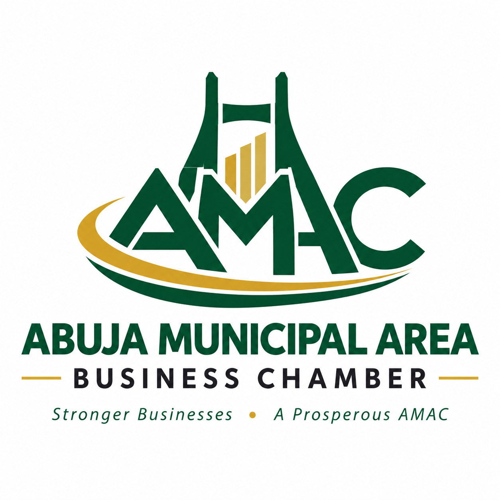
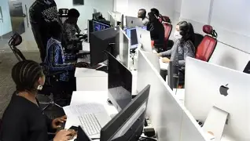

Our Mission
To connect businesses, provide useful business opportunities, encourage professional development, and support cooperation among businesses in Abuja Municipal Area Council.

Abuja Municipal Business Chamber Abuja Municipal Area Council, FCTConnecting businesses, encouraging collaboration, and supporting economic growth in Abuja Municipal Area Council.
The Abuja Municipal Area Business Chamber is a Business community organization created to encourage communication, cooperation, and business development among local businesses and professionals.
The Chamber provides opportunities for businesses to connect with one another, promote their services, learn new skills, participate in events, and discover opportunities for growth.
Our goal is to create a supportive business environment where entrepreneurs and established organization can build useful relationships and contribute to the growth of the Abuja business community.

Our work is guided by commitment to businesses and the entire Abuja community.
To connect businesses, provide useful business opportunities, encourage professional development, and support cooperation among businesses in Abuja Municipal Area Council.
To build a strong and connected business community where local businesses can grow, create opportunities, and contribute to the economic growth of Abuja.
We provide opportunities and activities that help businesses connect and develop.
We provide opportunities for business owners and professionals to meet, exchange ideas, and bubild relationships.
The Chamber members can use networking activities and member spotlights to introduce their businesses to local business community.
We encourage business education through workshops, seminars, and activities that can help entrepreneurs improve their skills.
We encourage cooperation between businesses and the entire community to support positive development.
Abuja is hub to businesses operating in many different industries. These businesses provide products, services, employment, and opportunities to people all over the city.
The Abuja Municipal Area Business Chamber brings businesses together so that they can learn from each other, develop professional relationships, and identify opportunities for cooperation.
Been a member of the chamber provides opportunities to become more connected with the local business community.
Meet other entrepreneurs, professionals, and business owners.
Promote your organization and introduce your services to other Chamber members.
Participate in workshops, seminars, and other educational activities.
Build relationships with businesses and professionals working in Abuja.
Join the Abuja Municipal Area Business Chamber and connect with businesses and professionals who are working towards a strong business community.
Join the Chamber